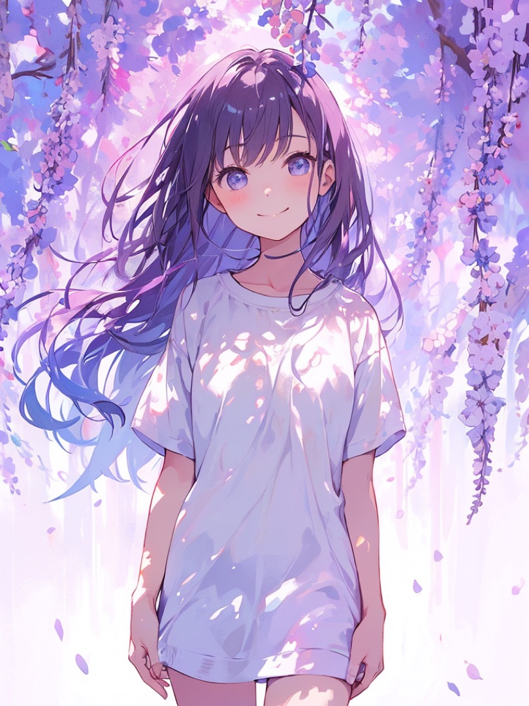

NOCTA
Visual 01 — Storyboard

Scene 01 · 寄り
静寂の中で出会う
NOCTA — Visual Series
01
.
藤の花に佇む少女
Storyboard · 3 Scenes · Silent
NOCTA
.
遊ぶことで人生を彩ろう
Visual 01 — fin
◀ Prev
▶ Play
Next ▶
← → キー / 画面クリックでシーン送り · スペースで再生・停止